2023 Higher Mathematics - Paper 2 marking instructions
Source: Scottish Qualifications Authority (SQA) / Qualifications Scotland. This is a StemInteract HTML companion, not an official HTML edition. Selectable text is supplied alongside original page images. Use the images or original PDF for equations, powers, fractions, vector notation, tables and diagrams; text extraction cannot fully preserve mathematical layout.
Jump to a question
PDF page 1
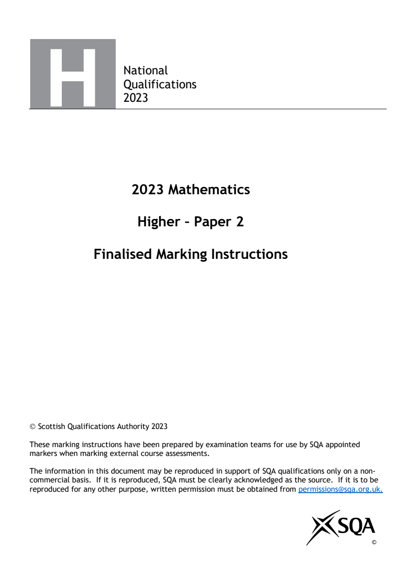
Selectable page text
National
Qualifications
2023
2023 Mathematics
Higher – Paper 2
Finalised Marking Instructions
Scottish Qualifications Authority 2023
These marking instructions have been prepared by examination teams for use by SQA appointed
markers when marking external course assessments.
The information in this document may be reproduced in support of SQA qualifications only on a non-
commercial basis. If it is reproduced, SQA must be clearly acknowledged as the source. If it is to be
reproduced for any other purpose, written permission must be obtained from permissions@sqa.org.uk.
©PDF page 2
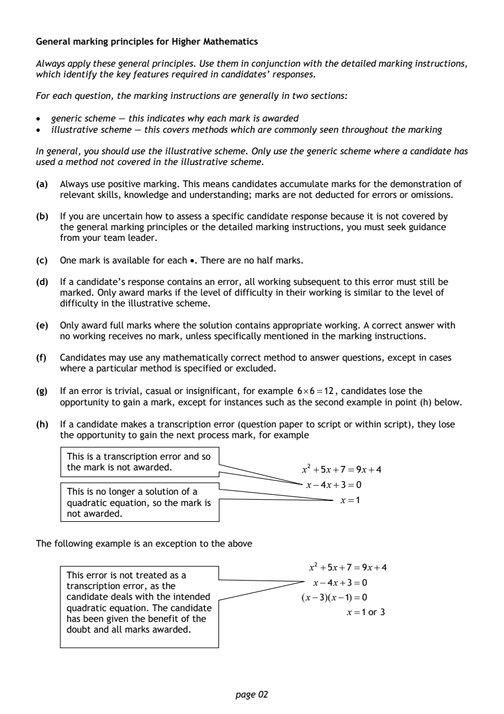
Selectable page text
General marking principles for Higher Mathematics
Always apply these general principles. Use them in conjunction with the detailed marking instructions,
which identify the key features required in candidates’ responses.
For each question, the marking instructions are generally in two sections:
• generic scheme — this indicates why each mark is awarded
• illustrative scheme — this covers methods which are commonly seen throughout the marking
In general, you should use the illustrative scheme. Only use the generic scheme where a candidate has
used a method not covered in the illustrative scheme.
(a) Always use positive marking. This means candidates accumulate marks for the demonstration of
relevant skills, knowledge and understanding; marks are not deducted for errors or omissions.
(b) If you are uncertain how to assess a specific candidate response because it is not covered by
the general marking principles or the detailed marking instructions, you must seek guidance
from your team leader.
(c) One mark is available for each •. There are no half marks.
(d) If a candidate’s response contains an error, all working subsequent to this error must still be
marked. Only award marks if the level of difficulty in their working is similar to the level of
difficulty in the illustrative scheme.
(e) Only award full marks where the solution contains appropriate working. A correct answer with
no working receives no mark, unless specifically mentioned in the marking instructions.
(f) Candidates may use any mathematically correct method to answer questions, except in cases
where a particular method is specified or excluded.
(g) If an error is trivial, casual or insignificant, for example 6×6=12, candidates lose the
opportunity to gain a mark, except for instances such as the second example in point (h) below.
(h) If a candidate makes a transcription error (question paper to script or within script), they lose
the opportunity to gain the next process mark, for example
This is a transcription error and so
the mark is not awarded. x² +5x+7 =9x+4
x−4x+3=0
This is no longer a solution of a
x =1
quadratic equation, so the mark is
not a warded.
The following example is an exception to the above
x² +5x+7 =9x+4
This error is not treated as a
x−4x+3=0
transcript ion err or, as the
candidate deals with the intended (x−3)(x−1)=0
quadratic equation. The candidate
x=1 or 3
has been given the benefit of the
doubt and all marks awarded.
page 02PDF page 3
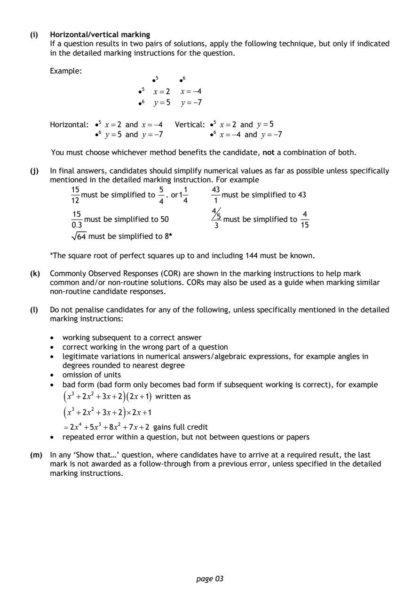
Selectable page text
(i) Horizontal/vertical marking
If a question results in two pairs of solutions, apply the following technique, but only if indicated
in the detailed marking instructions for the question.
Example:
•5 •6
•5 x=2 x=−4
•6 y =5 y=−7
Horizontal: •5 x=2 and x=−4 Vertical: •⁵ x=2 and y =5
•6 y =5 and y=−7 •6 x=−4 and y=−7
You must choose whichever method benefits the candidate, not a combination of both.
(j) In final answers, candidates should simplify numerical values as far as possible unless specifically
mentioned in the detailed marking instruction. For example
15 5 1 43
must be simplified to . or1 must be simplified to 43
12 4 4 1
4
15 4
5
must be simplified to 50 must be simplified to
0.3 3 15
64 must be simplified to 8*
*The square root of perfect squares up to and including 144 must be known.
(k) Commonly Observed Responses (COR) are shown in the marking instructions to help mark
common and/or non-routine solutions. CORs may also be used as a guide when marking similar
non-routine candidate responses.
(l) Do not penalise candidates for any of the following, unless specifically mentioned in the detailed
marking instructions:
• working subsequent to a correct answer
• correct working in the wrong part of a question
• legitimate variations in numerical answers/algebraic expressions, for example angles in
degrees rounded to nearest degree
• omission of units
• bad form (bad form only becomes bad form if subsequent working is correct), for example
( x³ +2x² +3x+2 )( 2x+1 ) written as
( )
x³ +2x² +3x+2 ×2x+1
=2x⁴ +5x³ +8x² +7x+2 gains full credit
• repeated error within a question, but not between questions or papers
(m) In any ‘Show that…’ question, where candidates have to arrive at a required result, the last
mark is not awarded as a follow-through from a previous error, unless specified in the detailed
marking instructions.
page 03PDF page 4
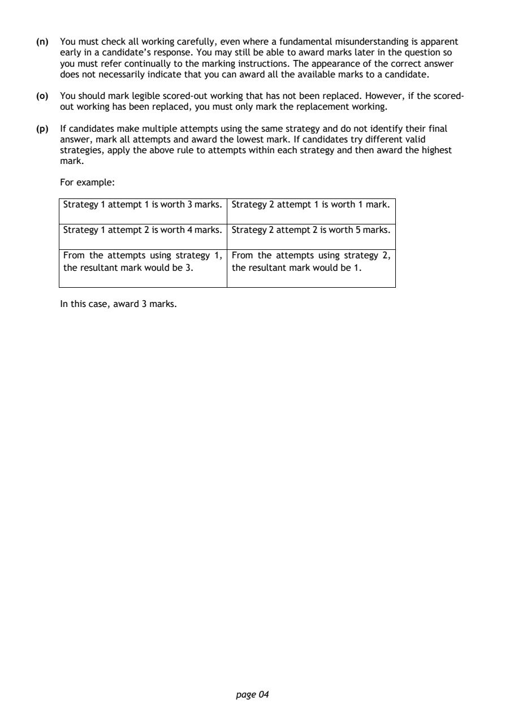
Selectable page text
(n) You must check all working carefully, even where a fundamental misunderstanding is apparent
early in a candidate’s response. You may still be able to award marks later in the question so
you must refer continually to the marking instructions. The appearance of the correct answer
does not necessarily indicate that you can award all the available marks to a candidate.
(o) You should mark legible scored-out working that has not been replaced. However, if the scored-
out working has been replaced, you must only mark the replacement working.
(p) If candidates make multiple attempts using the same strategy and do not identify their final
answer, mark all attempts and award the lowest mark. If candidates try different valid
strategies, apply the above rule to attempts within each strategy and then award the highest
mark.
For example:
Strategy 1 attempt 1 is worth 3 marks. Strategy 2 attempt 1 is worth 1 mark.
Strategy 1 attempt 2 is worth 4 marks. Strategy 2 attempt 2 is worth 5 marks.
From the attempts using strategy 1, From the attempts using strategy 2,
the resultant mark would be 3. the resultant mark would be 1.
In this case, award 3 marks.
page 04PDF page 5
Paper 2, Question 1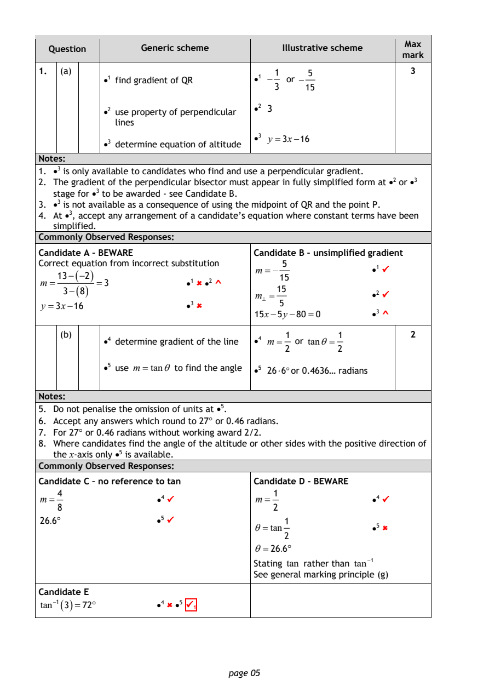
Selectable page text
Max
Question Generic scheme Illustrative scheme
mark
1. (a) 1 5 3
•1 find gradient of QR •1 − or −
3 15
•2 use property of perpendicular •2 3
lines
•3 y =3x−16
•3 determine equation of altitude
Notes:
1. •³ is only available to candidates who find and use a perpendicular gradient.
2. The gradient of the perpendicular bisector must appear in fully simplified form at •² or •³
stage for •³ to be awarded - see Candidate B.
3. •³ is not available as a consequence of using the midpoint of QR and the point P.
4. At •³, accept any arrangement of a candidate’s equation where constant terms have been
simplified.
Commonly Observed Responses:
Candidate A – BEWARE Candidate B – unsimplified gradient
Correct equation from incorrect substitution 5
m=− •1
13−(−2 )
15
m= =3 •1 •2 ^
3−( 8 ) 15
m_{⊥} = •2
y =3x−16 •3 5
15x−5y−80=0 •3 ^
(b) 1 1 2
•4 determine gradient of the line •4 m= or tanθ=
2 2
•5 use m= tanθ to find the angle •5 26⋅6°or 0.4636… radians
Notes:
5. Do not penalise the omission of units at •⁵.
6. Accept any answers which round to 27° or 0.46 radians.
7. For 27° or 0.46 radians without working award 2/2.
8. Where candidates find the angle of the altitude or other sides with the positive direction of
the x-axis only •⁵ is available.
Commonly Observed Responses:
Candidate C – no reference to tan Candidate D - BEWARE
4 1
m= •4 m= •4
8 2
26.6° •5 1
θ=tan •5
2
θ=26.6°
Stating tan rather than tan⁻¹
See general marking principle (g)
Candidate E
tan⁻¹ ( 3 )=72° •4 •5
1
page 05PDF page 6
Paper 2, Question 2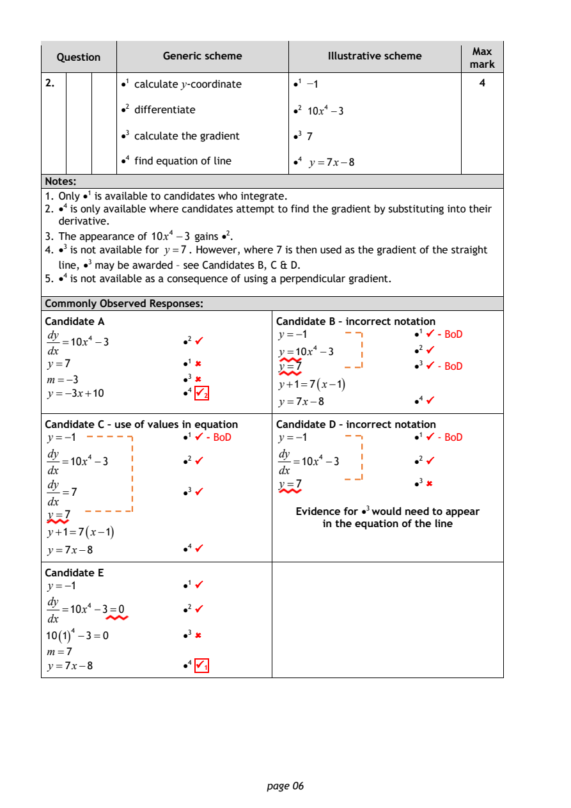
Selectable page text
Max
Question Generic scheme Illustrative scheme
mark
2. •1 calculate y-coordinate •1 −1 4
•2 differentiate •2 10x⁴ −3
•3 calculate the gradient •3 7
•4 find equation of line •4 y =7x−8
Notes:
1. Only •¹ is available to candidates who integrate.
2. •⁴ is only available where candidates attempt to find the gradient by substituting into their
derivative.
3. The appearance of 10x⁴ −3 gains •².
4. •³ is not available for y=7. However, where 7 is then used as the gradient of the straight
line, •³ may be awarded – see Candidates B, C & D.
5. •⁴ is not available as a consequence of using a perpendicular gradient.
Commonly Observed Responses:
Candidate A Candidate B – incorrect notat₁ion
dy y =−1 • - BoD
=10x⁴ −3 •2
dx y =10x⁴ −3 •2
y =7 •1 y =7 •3 - BoD
m=−3 •3 y+1=7 ( x−1 )
y =−3x+10 •4
2 y =7x−8 •4
Candidate C – use of values in₁ equation Candidate D – incorrect notat₁ion
y =−1 • - BoD y =−1 • - BoD
dy dy
=10x⁴ −3 •2 =10x⁴ −3 •2
dx dx
dy y =7 •3
=7 •3
dx
y =7 Evidence for •³ would need to appear
in the equation of the line
y+1=7 ( x−1 )
y =7x−8 •4
Candidate E
y =−1 •1
dy
=10x⁴ −3=0 •2
dx
10 ( 1 ) ⁴ −3=0 •3
m=7
y =7x−8 •4
1
page 06PDF page 7
Paper 2, Question 3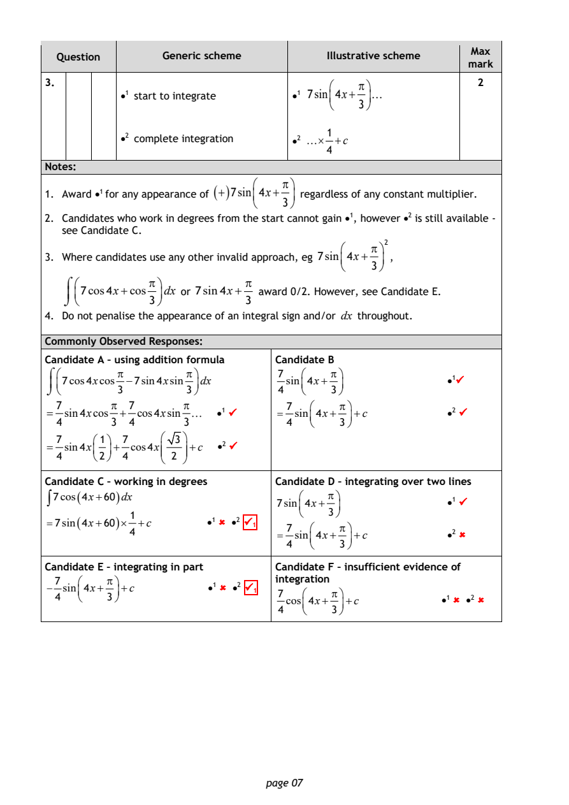
Selectable page text
Max
Question Generic scheme Illustrative scheme
mark
3. π 2
•1 start to integrate •1 7sin4x+
3
1
•2 complete integration •2 × +c
4
Notes:
π
1. Award •¹ for any appearance of
(+) 7sin4x+
regardless of any constant multiplier.
3
2. Candidates who work in degrees from the start cannot gain •¹, however •² is still available -
see Candidate C.
π²
3. Where candidates use any other invalid approach, eg 7sin4x+ ,
3
⌠ π π
7cos4x+cos dx or 7sin4x+ award 0/2. However, see Candidate E.
⌡ 3 3
4. Do not penalise the appearance of an integral sign and/or dx throughout.
Commonly Observed Responses:
Candidate A – using addition formula Candidate B
⌠ π π 7 π
7cos4xcos −7sin4xsin dx sin4x+ •1
⌡ 3 3 4 3
7 π 7 π 7 π
= sin4xcos + cos4xsin •1 = sin4x+ +c •2
4 3 4 3 4 3
7 1 7 3
= sin4x + cos4x +c •2
4 2 4 2
Candidate C – working in degrees Candidate D – integrating over two lines
∫7cos ( 4x+60 ) dx π
7sin4x+ •1
3
1
=7sin ( 4x+60 )× +c •1 •2
1 7 π
4 = sin4x+ +c •2
4 3
Candidate E – integrating in part Candidate F – insufficient evidence of
7 π integration
− sin4x+ +c •1 •2 1 7 π
4 3 cos4x+ +c •1 •2
4 3
page 07PDF page 8
Paper 2, Question 4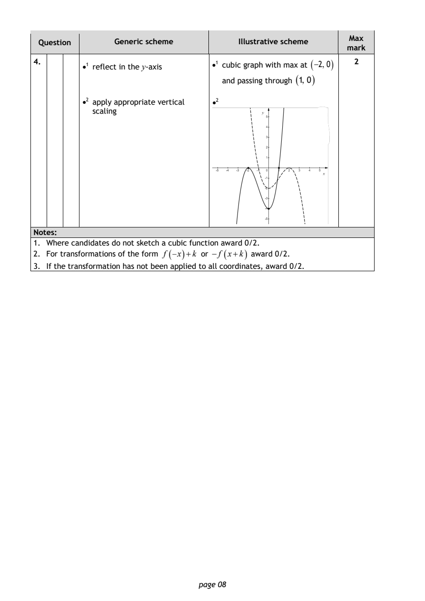
Selectable page text
Max
Question Generic scheme Illustrative scheme
mark
4. •1 reflect in the y-axis •1 cubic graph with max at (−2, 0 ) 2
( )
and passing through 1, 0
•2 apply appropriate vertical •2
scaling
Notes:
1. Where candidates do not sketch a cubic function award 0/2.
2. For transformations of the form f (−x )+k or −f ( x+k ) award 0/2.
3. If the transformation has not been applied to all coordinates, award 0/2.
page 08PDF page 9
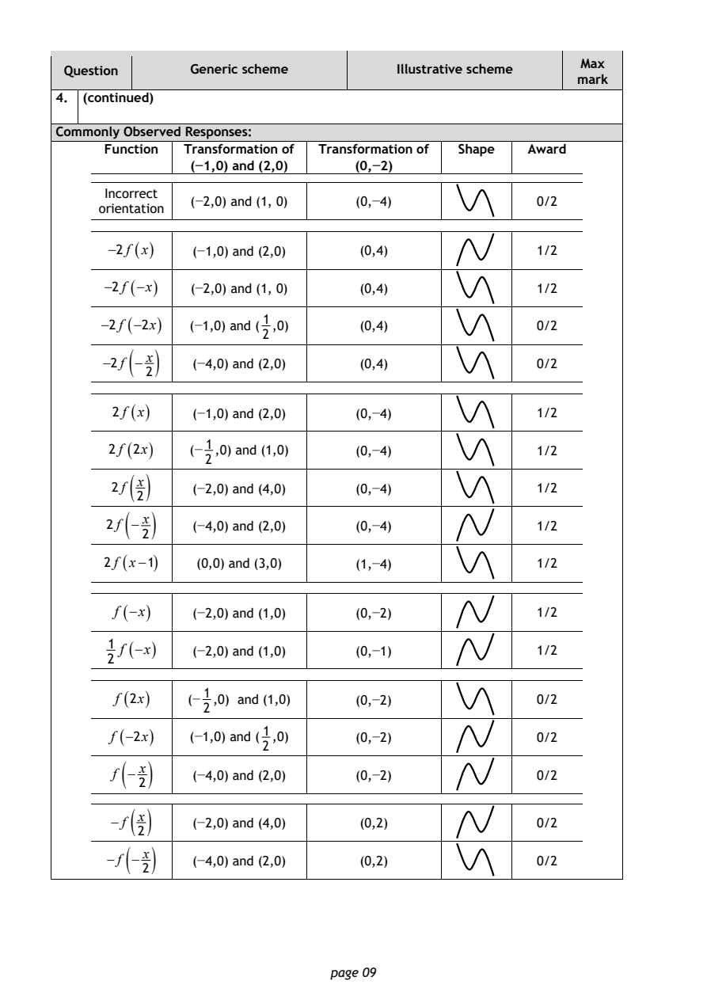
Selectable page text
Max
Question Generic scheme Illustrative scheme
mark
4. (continued)
Commonly Observed Responses:
Function Transformation of Transformation of Shape Award
(−1,0) and (2,0) (0,−2)
Incorrect
(−2,0) and (1, 0) (0,−4) 0/2
orientation
−2f ( x ) (−1,0) and (2,0) (0,4) 1/2
−2f (−x ) (−2,0) and (1, 0) (0,4) 1/2
−2f (−2x ) (−1,0) and ( 1 ,0) (0,4) 0/2
2
( )
x
−2f − (−4,0) and (2,0) (0,4) 0/2
2
( )
2f x (−1,0) and (2,0) (0,−4) 1/2
( ) 1
2f 2x (− ,0) and (1,0) (0,−4) 1/2
2
( )
x
2f (−2,0) and (4,0) (0,−4) 1/2
2
( )
x
2f − (−4,0) and (2,0) (0,−4) 1/2
2
2f ( x−1 ) (0,0) and (3,0) (1,−4) 1/2
f
(−x )
(−2,0) and (1,0) (0,−2) 1/2
1
f
(−x )
(−2,0) and (1,0) (0,−1) 1/2
2
( ) 1
f 2x (− ,0) and (1,0) (0,−2) 0/2
2
f
(−2x )
(−1,0) and (
1
,0) (0,−2) 0/2
2
( )
x
f − (−4,0) and (2,0) (0,−2) 0/2
2
( )
x
−f (−2,0) and (4,0) (0,2) 0/2
2
( )
x
−f − (−4,0) and (2,0) (0,2) 0/2
2
page 09PDF page 10
Paper 2, Question 5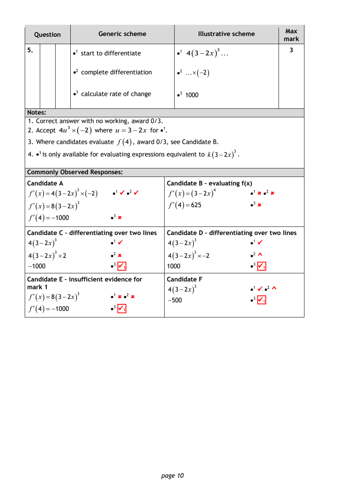
Selectable page text
Max
Question Generic scheme Illustrative scheme
mark
5. •1 start to differentiate •1 4 ( 3−2x ) ³ 3
•2 complete differentiation •2 ×(−2 )
•3 calculate rate of change •3 1000
Notes:
1. Correct answer with no working, award 0/3.
2. Accept 4u³×(−2 ) where u =3−2x for •¹.
( )
3. Where candidates evaluate f 4 , award 0/3, see Candidate B.
4. •³ is only available for evaluating expressions equivalent to k ( 3−2x ) ³.
Commonly Observed Responses:
Candidate A Candidate B – evaluating f(x)
f′( x )=4 ( 3−2x ) ³×(−2 ) •1 •2 f′( x )=( 3−2x ) ⁴ •1 •2
f′( x )=8 ( 3−2x ) ³ f′( 4 )=625 •3
f′( 4 )=−1000 •3
Candidate C – differentiating over two lines Candidate D – differentiating over two lines
4 ( 3−2x ) ³ •1 4 ( 3−2x ) ³ •1
4 ( 3−2x ) ³×2 •2 4 ( 3−2x ) ³×−2 •2 ^
−1000 •3 1000 •3
1 1
Candidate E – insufficient evidence for Candidate F
mark 1 4 ( 3−2x ) ³ •1 •2 ^
f′( x )=8 ( 3−2x ) ³ •1 •2
−500 •3
1
f′( 4 )=−1000 •3
1
page 10PDF page 11
Paper 2, Question 6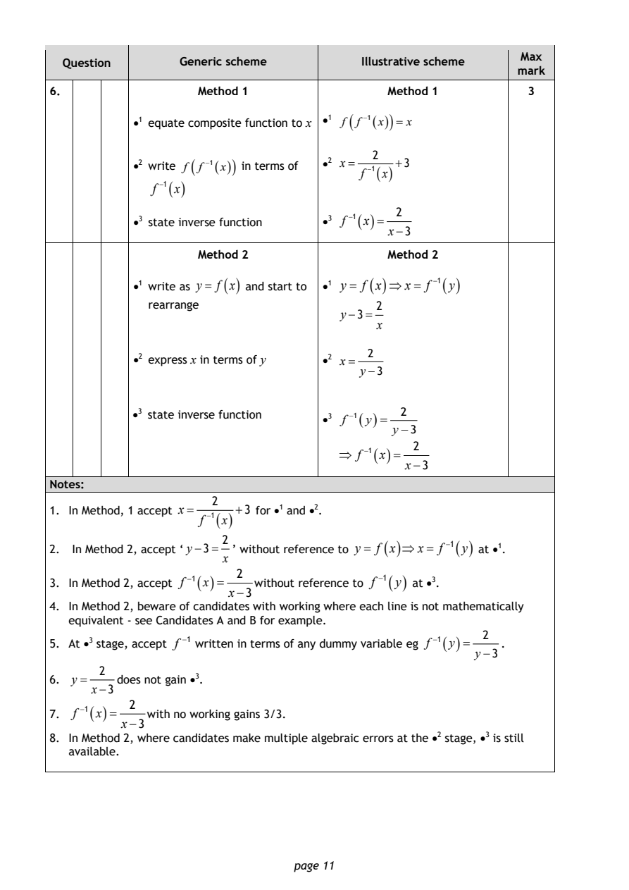
Selectable page text
Max
Question Generic scheme Illustrative scheme
mark
6. Method 1 Method 1 3
•1 equate composite function to x •¹ f ( f ⁻¹(x)) = x
2
•2 write f ( f ⁻¹(x)) in terms of •2 x= ( ) +3
f⁻¹ x
( )
f ⁻¹ x
2
•3 state inverse function •3 f ⁻¹ ( x )=
x−3
Method 2 Method 2
•1 write as y= f ( x ) and start to •1 y = f ( x )⇒ x= f ⁻¹ ( y )
rearrange 2
y−3=
x
2
•2 express x in terms of y •2 x=
y−3
•3 state inverse function •3 f ⁻¹(y)= 2
y−3
2
⇒ f ⁻¹ ( x )=
x−3
Notes:
2
1. In Method, 1 accept x= +3 for •¹ and •².
( )
f ⁻¹ x
2
2. In Method 2, accept ‘y−3= ’ without reference to y = f ( x )⇒ x= f ⁻¹ ( y ) at •¹.
x
2
3. In Method 2, accept f ⁻¹ ( x )= without reference to f ⁻¹ ( y ) at •³.
x−3
4. In Method 2, beware of candidates with working where each line is not mathematically
equivalent - see Candidates A and B for example.
2
5. At •³ stage, accept f ⁻¹ written in terms of any dummy variable eg f ⁻¹
(
y
)=
.
y−3
2
6. y = does not gain •³.
x−3
2
7. f ⁻¹
(
x
)=
with no working gains 3/3.
x−3
8. In Method 2, where candidates make multiple algebraic errors at the •² stage, •³ is still
available.
page 11PDF page 12
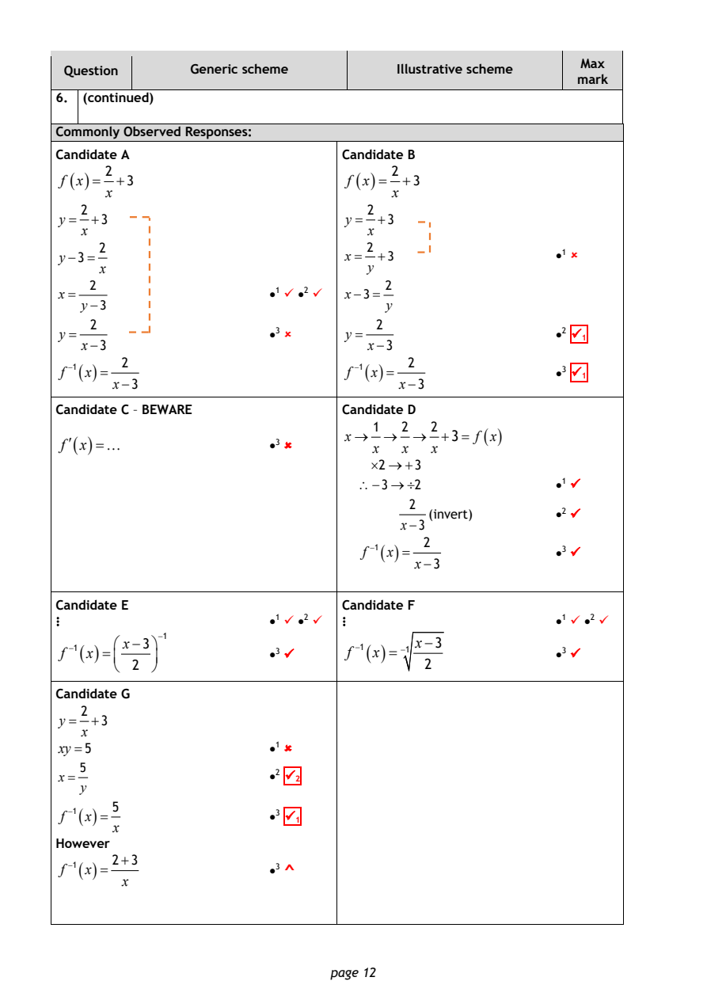
Selectable page text
Max
Question Generic scheme Illustrative scheme
mark
6. (continued)
Commonly Observed Responses:
Candidate A Candidate B
2 2
f ( x )= +3 f ( x )= +3
x x
2 2
y = +3 y = +3
x x
2 2
y−3= x= +3 •1
x y
2 2
x= •1 •2 x−3=
y−3 y
2 2
y = •3 y = •2
1
x−3 x−3
2 2
f ⁻¹ ( x )= f ⁻¹ ( x )= •3
1
x−3 x−3
Candidate C – BEWARE Candidate D
1 2 2
f′(
x
)=…
•3
x→
x
→
x
→
x
+3= f ( x )
×2→+3
∴−3→÷2 •1
2
(invert) •2
x−3
2
f ⁻¹ ( x )= •3
x−3
Candidate E Candidate F
•1 •2 •1 •2
x−3⁻¹ x−3
⋮ f ⁻¹ ( x ) = •3 ⋮ f ⁻¹ ( x ) =⁻1 •3
2 2
Candidate G
2
y = +3
x
xy =5 •1
5
x= •2
2
y
5
f ⁻¹ ( x )= •3
1
x
However
2+3
f ⁻¹ ( x )= •3 ^
x
page 12PDF page 13
Paper 2, Question 7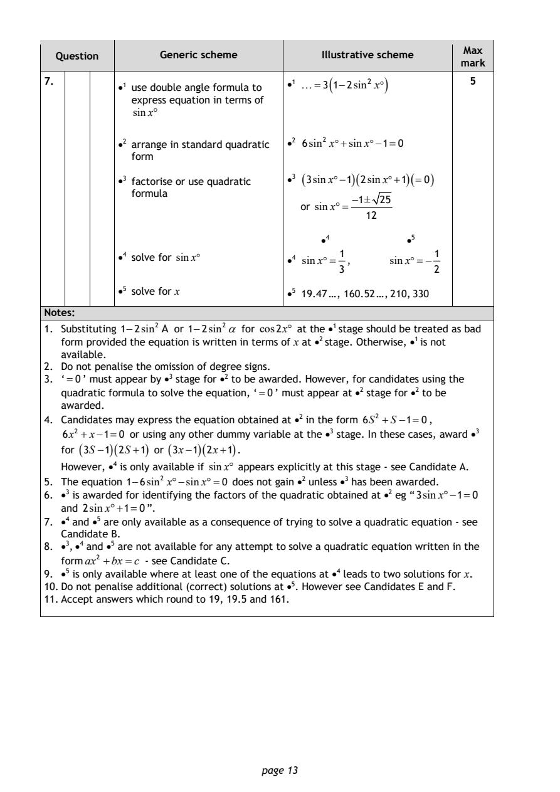
Selectable page text
Max
Question Generic scheme Illustrative scheme
mark
7. •1 use double angle formula to •1 =3 ( 1−2sin² x° ) 5
express equation in terms of
sinx°
•2 arrange in standard quadratic •2 6sin² x°+sinx°−1=0
form
•3 factorise or use quadratic •3 ( 3sinx°−1 )( 2sinx°+1 )(=0 )
formula
−1± 25
or sinx°=
12
•4 •5
•4 solve for sinx° •4 sinx°= 1 , sinx°=− 1
3 2
•5 solve for x •5 19.47…, 160.52…,210,330
Notes:
1. Substituting 1−2sin² A or 1−2sin²α for cos2x° at the •¹ stage should be treated as bad
form provided the equation is written in terms of x at •²stage. Otherwise, •¹is not
available.
2. Do not penalise the omission of degree signs.
3. ‘=0’ must appear by •³ stage for •² to be awarded. However, for candidates using the
quadratic formula to solve the equation, ‘=0’ must appear at •² stage for •² to be
awarded.
4. Candidates may express the equation obtained at •² in the form 6S² +S −1=0,
6x² +x−1=0 or using any other dummy variable at the •³ stage. In these cases, award •³
for ( 3S−1 )( 2S+1 ) or ( 3x−1 )( 2x+1 ) .
However, •⁴ is only available if sinx° appears explicitly at this stage - see Candidate A.
5. The equation 1−6sin² x°−sinx°=0 does not gain •² unless •³ has been awarded.
6. •³ is awarded for identifying the factors of the quadratic obtained at •² eg “3sinx°−1=0
and 2sinx°+1=0”.
7. •⁴ and •⁵ are only available as a consequence of trying to solve a quadratic equation - see
Candidate B.
8. •³, •4 and •⁵ are not available for any attempt to solve a quadratic equation written in the
formax² +bx =c - see Candidate C.
9. •⁵ is only available where at least one of the equations at •⁴ leads to two solutions for x.
10. Do not penalise additional (correct) solutions at •⁵. However see Candidates E and F.
11. Accept answers which round to 19, 19.5 and 161.
page 13PDF page 14
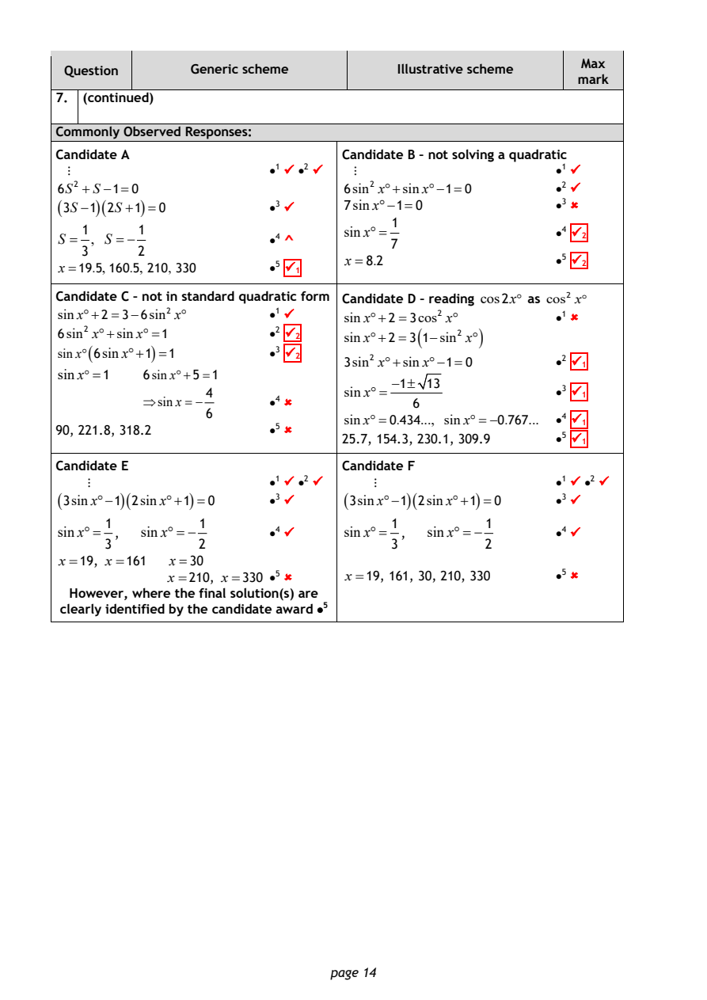
Selectable page text
Max
Question Generic scheme Illustrative scheme
mark
7. (continued)
Commonly Observed Responses:
Candidate A Candidate B – not solving a quadratic
•1 •2 •1
6S² +S−1=0 6sin² x°+sinx°−1=0 •2
⋮ ⋮
( 3S−1 )( 2S+1 )=0 •3 7sinx°−1=0 •3
1
1 1 sinx°= •4
S = , S =− •4 ^ 7 2
3 2
x=8.2 •5
x=19.5,160.5, 210, 330 •5 2
1
Candidate C – not in standard quadratic form Candidate D – reading cos2x° as cos² x°
sinx°+2=3−6sin² x° •1 sinx°+2=3cos² x° •1
6sin² x°+sinx°=1 •2 2 sinx°+2=3 ( 1−sin² x° )
sinx°( 6sinx°+1 )=1 •3
2 3sin² x°+sinx°−1=0 •2
1
sinx°=1 6sinx°+5=1
−1± 13
4 sinx°= •3
1
⇒sinx=− •4 6
6
sinx°=0.434..., sinx°=−0.767... •4
1
90, 221.8, 318.2 •5
25.7, 154.3, 230.1, 309.9 •5
1
Candidate E Candidate F
•1 •2 •1 •2
( 3sinx°−1 )( 2sinx°+1 )=0 •3 ( 3sinx°−1 )( 2sinx°+1 )=0 •3
⋮ ⋮
1 1 1 1
sinx°= , sinx°=− •4 sinx°= , sinx°=− •4
3 2 3 2
x =19, x =161 x=30
x =210, x =330 •⁵ x =19, 161, 30, 210, 330 •5
However, where the final solution(s) are
clearly identified by the candidate award •⁵
page 14PDF page 15
Paper 2, Question 8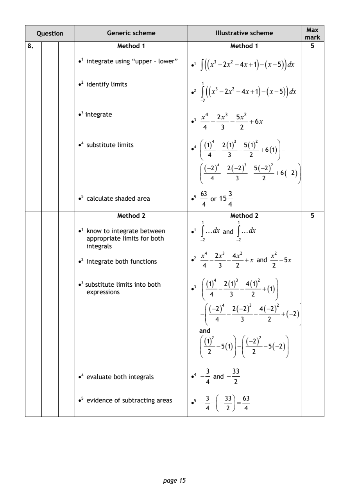
Selectable page text
Max
Question Generic scheme Illustrative scheme
mark
8. Method 1 Method 1 5
•1 integrate using “upper – lower” •1 ∫ (( x³ −2x² −4x+1 ) −( x−5 ) ) dx
•2 identify limits 1
•2 ∫ (( x³ −2x² −4x+1 ) −( x−5 ) ) dx
−2
•3 integrate
x⁴ 2x³ 5x²
•3 − − +6x
4 3 2
•4 substitute limits ( 1 ) ⁴ 2 ( 1 ) ³ 5 ( 1 ) ²
•4 − − +6 ( 1 )−
4 3 2
(−2 )
⁴ 2
(−2 )
³ 5
(−2 )
²
− − +6 (−2 )
4 3 2
63 3
•5 calculate shaded area •5 or 15
4 4
Method 2 Method 2 5
1 1
•1 know to integrate between •1 ∫dx and ∫dx
appropriate limits for both
−2 −2
integrals
x⁴ 2x³ 4x² x²
•2 integrate both functions •2 − − +x and −5x
4 3 2 2
( ) ( ) ( )
•3 substitute limits into both 1 ⁴ 2 1 ³ 4 1 ²
•3 − − +( 1 )
expressions
4 3 2
(−2 )
⁴ 2
(−2 )
³ 4
(−2 )
²
− − − +(−2 )
4 3 2
and
(
1
)
²
(−2 )
²
−5 ( 1 )− −5 (−2 )
2 2
3 33
•4 evaluate both integrals •4 − and −
4 2
•5 evidence of subtracting areas •5 − 3 −
− 33
= 63
4 2 4
page 15PDF page 16
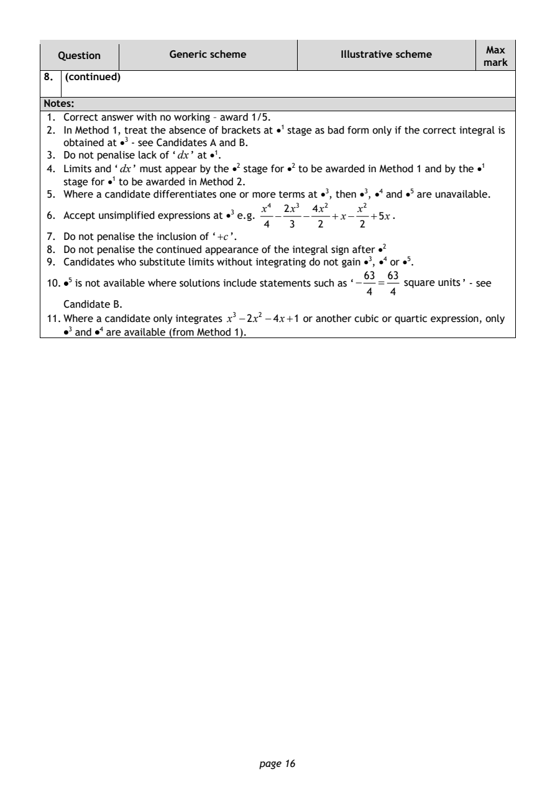
Selectable page text
Max
Question Generic scheme Illustrative scheme
mark
8. (continued)
Notes:
1. Correct answer with no working – award 1/5.
2. In Method 1, treat the absence of brackets at •¹ stage as bad form only if the correct integral is
obtained at •³ - see Candidates A and B.
3. Do not penalise lack of ‘dx’ at •¹.
4. Limits and ‘dx’ must appear by the •² stage for •² to be awarded in Method 1 and by the •¹
stage for •¹ to be awarded in Method 2.
5. Where a candidate differentiates one or more terms at •³, then •³, •4 and •⁵ are unavailable.
x⁴ 2x³ 4x² x²
6. Accept unsimplified expressions at •³ e.g. − − +x− +5x.
4 3 2 2
7. Do not penalise the inclusion of ‘+c’.
8. Do not penalise the continued appearance of the integral sign after •²
9. Candidates who substitute limits without integrating do not gain •³, •4 or •⁵.
63 63
10. •⁵ is not available where solutions include statements such as ‘− = square units’ - see
4 4
Candidate B.
11. Where a candidate only integrates x³ −2x² −4x+1 or another cubic or quartic expression, only
•3 and •⁴ are available (from Method 1).
page 16PDF page 17
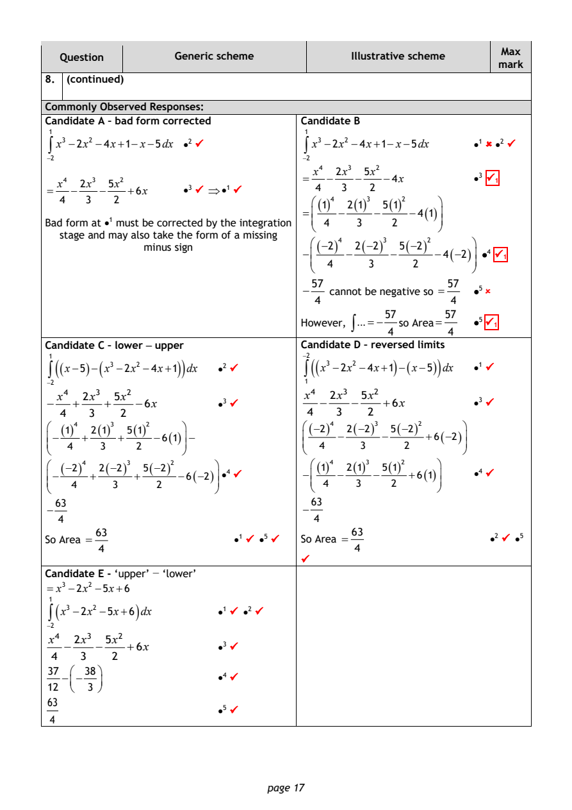
Selectable page text
Max
Question Generic scheme Illustrative scheme
mark
8. (continued)
Commonly Observed Responses:
Candidate A – bad form corrected Candidate B
1 1
∫ x³ −2x² −4x+1−x−5dx •² ∫ x³ −2x² −4x+1−x−5dx •1 •2
−2 −2
x⁴ 2x³ 5x²
= − − −4x •3
x⁴ 2x³ 5x² 1
= − − +6x •3 ⇒•1 4 3 2
4 3 2 ( ) ( ) ( )
1 ⁴ 2 1 ³ 5 1 ²
= − − −4 ( 1 )
Bad form at •¹ must be corrected by the integration 4 3 2
stage and may also take the form of a missing
minus sign
(−2 )
⁴ 2
(−2 )
³ 5
(−2 )
²
− − − −4 (−2 ) •4
1
4 3 2
57 57
− cannot be negative so = •5
4 4
57 57
However, ∫...=− so Area= •5
1
4 4
Candidate C – lower – upper Candidate D – reversed limits
1 −2
∫ ( ( x−5 )− ( x³ −2x² −4x+1 )) dx •2 ∫ (( x³ −2x² −4x+1 ) −( x−5 ) ) dx •1
−2 1
x⁴ 2x³ 5x² x⁴ 2x³ 5x²
− + + −6x •3 − − +6x •3
4 3 2 4 3 2
( 1 ) ⁴ 2 ( 1 ) ³ 5 ( 1 ) ² (−2 ) ⁴ 2 (−2 ) ³ 5 (−2 ) ²
− + + −6 ( 1 )− − − +6 (−2 )
4 3 2 4 3 2
(−2 ) ⁴ 2 (−2 ) ³ 5 (−2 ) ² ( 1 ) ⁴ 2 ( 1 ) ³ 5 ( 1 ) ²
− + + −6 (−2 )•4 − − − +6 ( 1 ) •4
4 3 2 4 3 2
63 63
− −
4 4
63 63
So Area = •1 •5 So Area = •2 •5
4 4
Candidate E - ‘upper’ − ‘lower’
= x³ −2x² −5x+6
1
( )
∫ x³ −2x² −5x+6 dx •1 •2
−2
x⁴ 2x³ 5x²
− − +6x •3
4 3 2
37 38
− − •4
12 3
63
•5
4
page 17PDF page 18
Paper 2, Question 9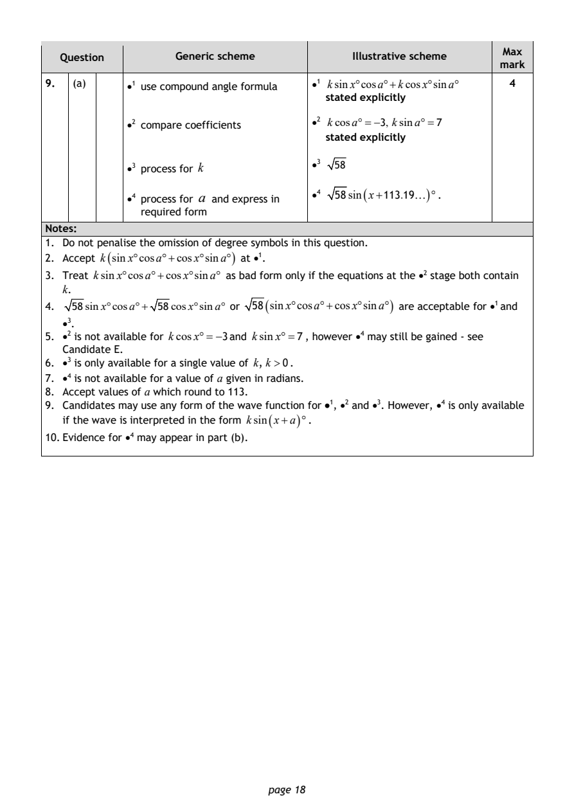
Selectable page text
Max
Question Generic scheme Illustrative scheme
mark
9. (a) •1 use compound angle formula •1 ksinx°cosa°+kcosx°sina° 4
stated explicitly
•2 compare coefficients •2 kcosa°=−3, ksina°=7
stated explicitly
•3 process for k •3 58
•4 process for a and express in •4 58sin ( x+113.19)°.
required form
Notes:
1. Do not penalise the omission of degree symbols in this question.
2. Accept k
( sinx°cosa°+cosx°sina°)
at •¹.
3. Treat ksinx°cosa°+cosx°sina° as bad form only if the equations at the •² stage both contain
k.
4. 58sinx°cosa°+ 58cosx°sina° or 58
( sinx°cosa°+cosx°sina°)
are acceptable for •¹ and
•3.
5. •² is not available for kcosx°=−3and ksinx°=7, however •⁴ may still be gained - see
Candidate E.
6. •³ is only available for a single value of k, k >0.
7. •⁴ is not available for a value of a given in radians.
8. Accept values of a which round to 113.
9. Candidates may use any form of the wave function for •¹, •2 and •³. However, •⁴ is only available
if the wave is interpreted in the form ksin ( x+a )°.
10. Evidence for •⁴ may appear in part (b).
page 18PDF page 19
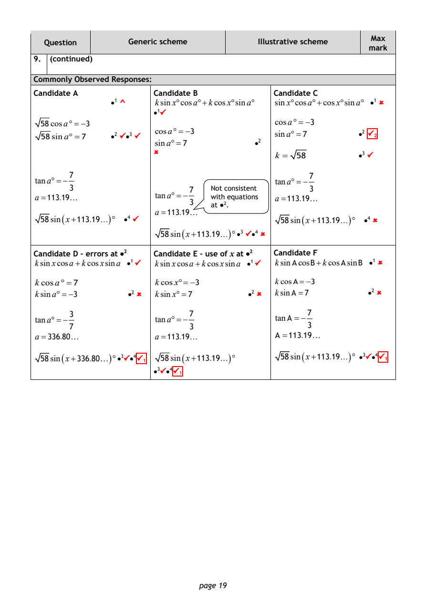
Selectable page text
Max
Question Generic scheme Illustrative scheme
mark
9. (continued)
Commonly Observed Responses:
Candidate A Candidate B Candidate C
•1 ^ ksinx°cosa°+kcosx°sina° sinx°cosa°+cosx°sina° •¹
•1
58cosa°=−3 cosa°=−3
58sina°=7 •2 •3 cosa°=−3 sina°=7 •2 2
sina°=7 •2
k = 58 •3
7 7
tana°=− tana°=−
3 7 Not consistent 3
a=113.19
tana°=−
with equations a=113.19
3
at ●².
a=113.19
58sin ( x+113.19)° •4 58sin ( x+113.19)° •4
58sin ( x+113.19)°•3 •4
Candidate D – errors at •² Candidate E – use of x at •² Candidate F
ksinxcosa+kcosxsina •¹ ksinxcosa+kcosxsina •¹ ksinAcosB+kcosAsinB •¹
kcosa°=7 kcosx°=−3 kcosA=−3
ksina°=−3 •2 ksinx°=7 •2 ksinA =7 •2
3 7 7
tana°=− tana°=− tanA =−
7 3 3
a=336.80 a=113.19 A =113.19
58sin ( x+336.80)°•3•4 1 58sin ( x+113.19)° 58sin ( x+113.19)° •3•4 1
•3•4
1
page 19PDF page 20
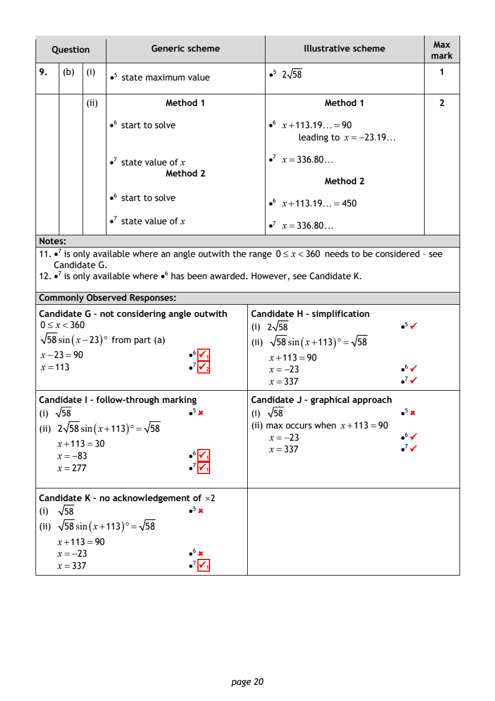
Selectable page text
Max
Question Generic scheme Illustrative scheme
mark
9. (b) (i) •5 state maximum value •5 2 58 1
(ii) Method 1 Method 1 2
•6 start to solve •6 x+113.19=90
leading to x=−23.19
•7 state value of x
•7 x=336.80
Method 2
Method 2
•6 start to solve
•6 x+113.19=450
•7 state value of x
•7 x=336.80
Notes:
11. •⁷ is only available where an angle outwith the range 0≤ x<360 needs to be considered – see
Candidate G.
12. •⁷ is only available where •⁶ has been awarded. However, see Candidate K.
Commonly Observed Responses:
Candidate G – not considering angle outwith Candidate H – simplification
0≤ x<360 (i) 2 58 •5
58sin ( x−23 )° from part (a) (ii) 58sin ( x+113 )°= 58
x−23=90 •6 1 x+113=90
x=113 •7 2 x=−23 •6
x=337 •7
Candidate I – follow-through marking Candidate J – graphical approach
(i) 58 •5 (i) 58 •5
(ii) 2 58sin ( x+113 )°= 58 (ii) max occurs when x+113=90
x=−23 •6
x+113=30
x=337 •7
x=−83 •6
1
x=277 •7
1
Candidate K – no acknowledgement of ×2
(i) 58 •5
(ii) 58sin ( x+113 )°= 58
x+113=90
x=−23 •6
x=337 •7
1
page 20PDF page 21
Paper 2, Question 10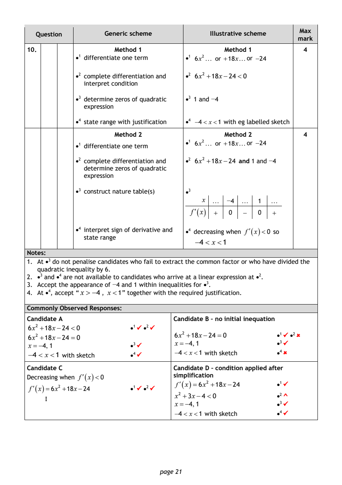
Selectable page text
Max
Question Generic scheme Illustrative scheme
mark
10. Method 1 Method 1 4
•1 differentiate one term •1 6x² or +18xor −24
•2 complete differentiation and •2 6x² +18x−24 <0
interpret condition
•3 determine zeros of quadratic •3 1 and −4
expression
•4 state range with justification •4 −4< x<1 with eg labelled sketch
Method 2 Method 2 4
•1 differentiate one term •1 6x² or +18xor −24
•2 complete differentiation and •2 6x² +18x−24 and 1 and −4
determine zeros of quadratic
expression
•3 construct nature table(s) •3
x … −4 … 1 …
f′(
x
)
+ 0 − 0 +
•4 interpret sign of derivative and •4 decreasing when f′( x )<0 so
state range
−4 < x <1
Notes:
1. At •³ do not penalise candidates who fail to extract the common factor or who have divided the
quadratic inequality by 6.
2. •³ and •⁴ are not available to candidates who arrive at a linear expression at •².
3. Accept the appearance of −4 and 1 within inequalities for •³.
4. At •⁴, accept “x > −4, x <1” together with the required justification.
Commonly Observed Responses:
Candidate A Candidate B – no initial inequation
6x² +18x−24 <0 •1 •2
6x² +18x−24 =0 6x² +18x−24 =0 •1 •2
x=−4,1 •3 x=−4,1 •3
−4 < x 1< with sketch •4 −4 < x<1 with sketch •4
Candidate C Candidate D – condition applied after
Decreasing when f′( x )<0 simplification
f′( x )=6x² +18x−24 •1
f′( x )=6x² +18x−24 •1 •2
x² +3x−4 <0 •2 ^
x=−4,1 •3
⋮ −4 < x<1 with sketch •4
page 21PDF page 22
Paper 2, Question 11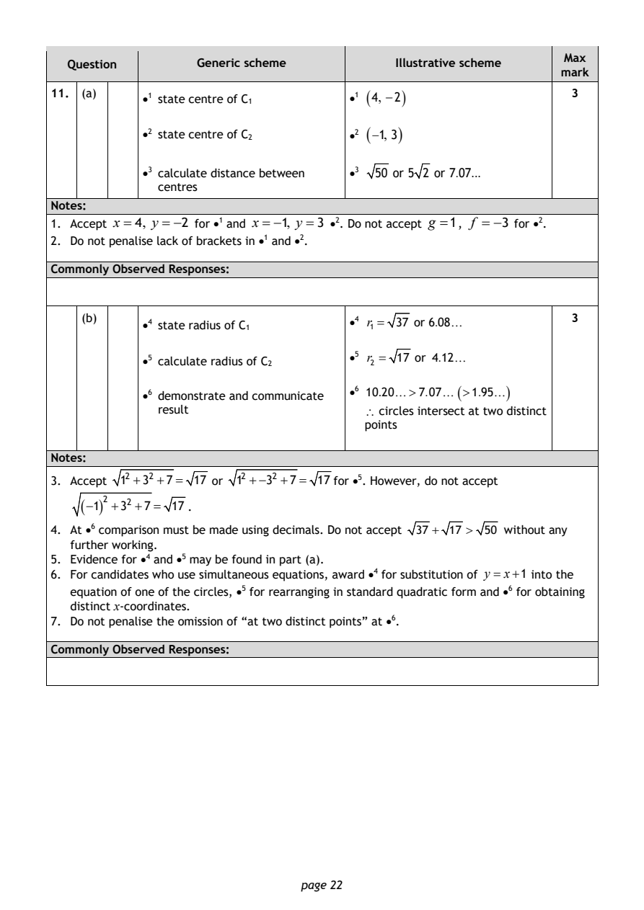
Selectable page text
Max
Question Generic scheme Illustrative scheme
mark
11. (a) •1 state centre of C •1 ( 4, −2 ) 3
1
•2 state centre of C •2 ( −1, 3 )
2
•3 calculate distance between •3 50 or 5 2 or 7.07...
centres
Notes:
1. Accept x = 4, y = −2 for •¹ and x = −1, y =3 •². Do not accept g =1, f = −3 for •².
2. Do not penalise lack of brackets in •¹ and •².
Commonly Observed Responses:
(b) •4 state radius of C •4 r = 37 or 6.08 3
1 1
•5 calculate radius of C •5 r₂ = 17 or 4.12
2
•6 demonstrate and communicate •6 10.20>7.07(>1.95)
result ∴circles intersect at two distinct
points
Notes:
3. Accept 1² +3² +7= 17 or 1² +−3² +7= 17 for •⁵. However, do not accept
(−1 ) ² +3² +7= 17 .
4. At •⁶ comparison must be made using decimals. Do not accept 37 + 17 > 50 without any
further working.
5. Evidence for •⁴ and •⁵ may be found in part (a).
6. For candidates who use simultaneous equations, award •⁴ for substitution of y = x+1 into the
equation of one of the circles, •⁵ for rearranging in standard quadratic form and •⁶ for obtaining
distinct x-coordinates.
7. Do not penalise the omission of “at two distinct points” at •⁶.
Commonly Observed Responses:
page 22PDF page 23
Paper 2, Question 12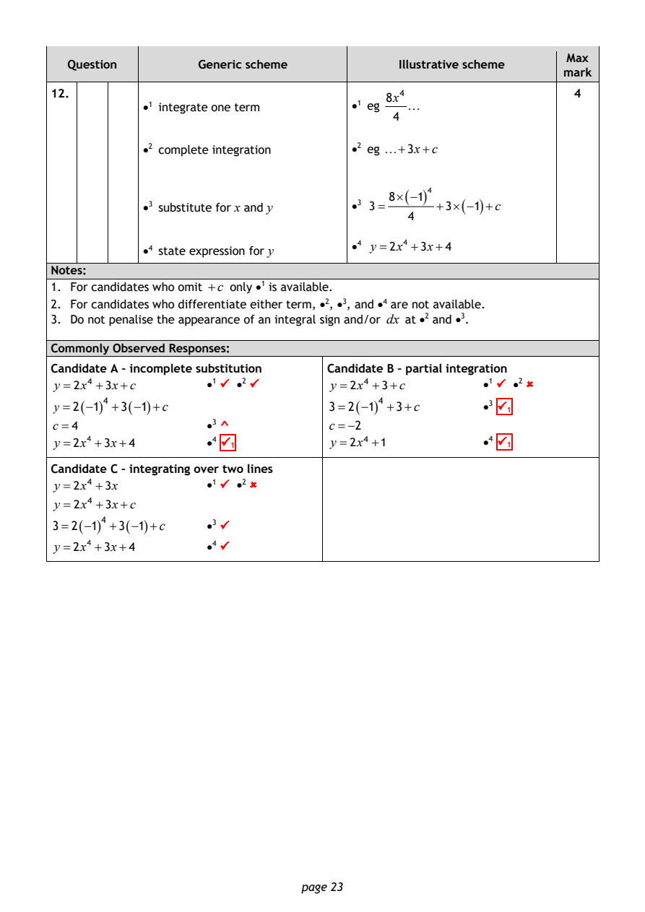
Selectable page text
Max
Question Generic scheme Illustrative scheme
mark
12. 4
8x⁴
•1 integrate one term •1 eg
4
•2 complete integration •2 eg …+3x+c
8×(−1 )
⁴
•3 substitute for x and y •3 3= +3×(−1 )+c
4
•4 state expression for y •4 y =2x⁴ +3x+4
Notes:
1. For candidates who omit +c only •¹ is available.
2. For candidates who differentiate either term, •², •3, and •⁴ are not available.
3. Do not penalise the appearance of an integral sign and/or dx at •² and •³.
Commonly Observed Responses:
Candidate A – incomplete substitution Candidate B – partial integration
y =2x⁴ +3x+c •1 •2 y =2x⁴ +3+c •1 •2
y =2(−1)⁴ +3(−1)+c 3=2(−1)⁴ +3+c •3
1
c=4 •3 ^ c=−2
y =2x⁴ +3x+4 •4 y =2x⁴ +1 •4
1 1
Candidate C – integrating over two lines
y =2x⁴ +3x •1 •2
y =2x⁴ +3x+c
3=2(−1)⁴ +3(−1)+c •3
y =2x⁴ +3x+4 •4
page 23PDF page 24
Paper 2, Question 13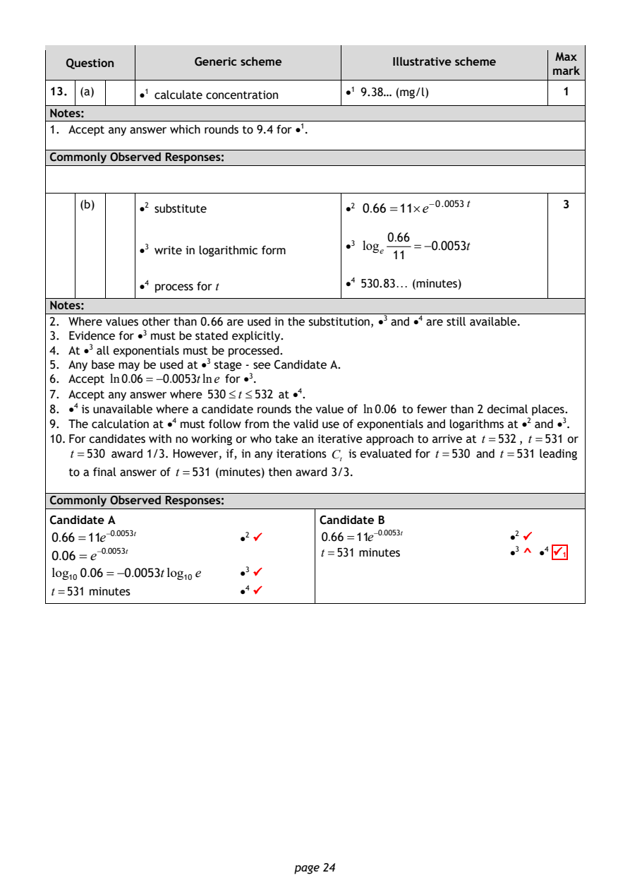
Selectable page text
Max
Question Generic scheme Illustrative scheme
mark
13. (a) •1 calculate concentration •1 9.38… (mg/l) 1
Notes:
1. Accept any answer which rounds to 9.4 for •¹.
Commonly Observed Responses:
(b) •2 substitute •2 0.66 =11×e⁻⁰^{.}⁰⁰53t 3
0.66
•3 write in logarithmic form
•3 logₑ =−0.0053t
11
•4 process for t •4 530.83… (minutes)
Notes:
2. Where values other than 0.66 are used in the substitution, •³ and •⁴ are still available.
3. Evidence for •³ must be stated explicitly.
4. At •³ all exponentials must be processed.
5. Any base may be used at •³ stage - see Candidate A.
6. Accept ln0.06=−0.0053tlne for •³.
7. Accept any answer where 530≤t ≤532 at •⁴.
8. •⁴ is unavailable where a candidate rounds the value of ln0.06 to fewer than 2 decimal places.
9. The calculation at •⁴ must follow from the valid use of exponentials and logarithms at •² and •³.
10. For candidates with no working or who take an iterative approach to arrive at t =532, t =531 or
t =530 award 1/3. However, if, in any iterations Cₜ is evaluated for t =530 and t =531 leading
to a final answer of t =531 (minutes) then award 3/3.
Commonly Observed Responses:
Candidate A Candidate B
0.66 =11e⁻⁰^{.}⁰⁰⁵3t •2 0.66 =11e⁻⁰^{.}⁰⁰⁵3t •2
0.06 =e⁻⁰^{.}⁰⁰⁵3t t =531 minutes •3 ^ •4 1
log₁₀ 0.06 =−0.0053tlog₁₀ e •3
t =531 minutes •4
page 24PDF page 25
Paper 2, Question 14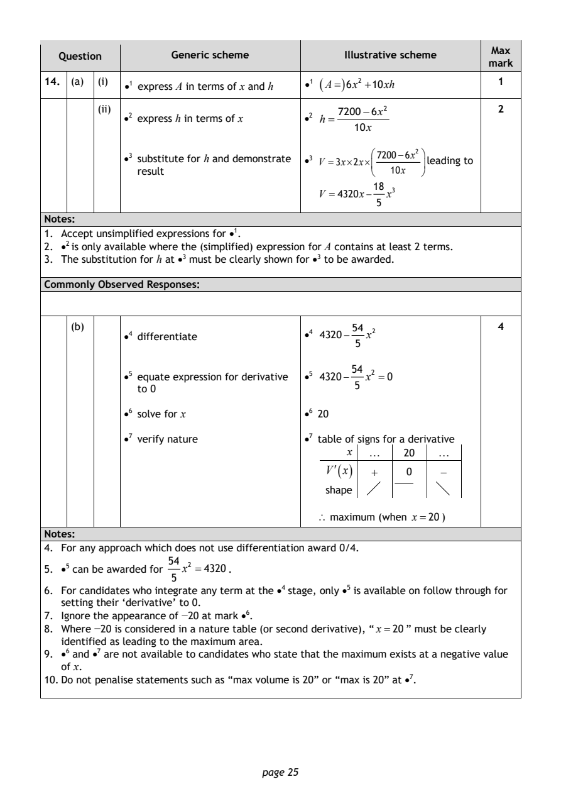
Selectable page text
Max
Question Generic scheme Illustrative scheme
mark
14. (a) (i) •1 express A in terms of x and h •1 ( A=) 6x² +10xh 1
(ii) 7200−6x² 2
•2 express h in terms of x •2 h=
10x
•3 substitute for h and demonstrate •3 V =3x×2x×
7200−6x²
leading to
result 10x
18
V =4320x− x³
5
Notes:
1. Accept unsimplified expressions for •¹.
2. •² is only available where the (simplified) expression for A contains at least 2 terms.
3. The substitution for h at •³ must be clearly shown for •³ to be awarded.
Commonly Observed Responses:
(b) 54 4
•4 differentiate •4 4320− x²
5
54
•5 equate expression for derivative •5 4320− x² =0
5
to 0
•6 solve for x •6 20
•7 verify nature •7 table of signs for a derivative
x … 20 …
V′(
x
)
+ 0 −
shape
∴ maximum (when x=20)
Notes:
4. For any approach which does not use differentiation award 0/4.
54
5. •⁵ can be awarded for x² =4320.
5
6. For candidates who integrate any term at the •⁴ stage, only •⁵ is available on follow through for
setting their ‘derivative’ to 0.
7. Ignore the appearance of −20 at mark •⁶.
8. Where −20 is considered in a nature table (or second derivative), “x=20” must be clearly
identified as leading to the maximum area.
9. •⁶ and •⁷ are not available to candidates who state that the maximum exists at a negative value
of x.
10. Do not penalise statements such as “max volume is 20” or “max is 20” at •⁷.
page 25PDF page 26
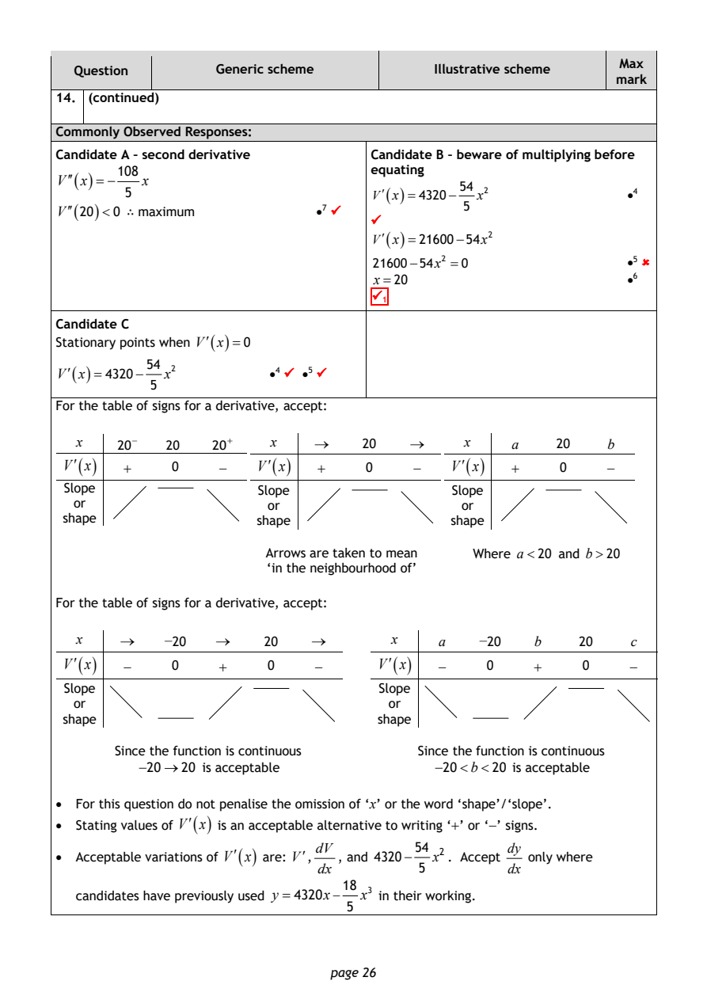
Selectable page text
Max
Question Generic scheme Illustrative scheme
mark
14. (continued)
Commonly Observed Responses:
Candidate A – second derivative Candidate B – beware of multiplying before
108 equating
V′′(
x
)=−
x
54
5 V′( x )=4320− x² •4
V′′( 20 )<0 maximum •7 5
∴
V′(
x
)=21600−54x²
21600−54x² =0 •5
x=20 •6
1
Candidate C
Stationary points when
V′(
x
)=0
54
V′( x )=4320− x² •4 •5
5
For the table of signs for a derivative, accept:
x 20⁻ 20 20⁺ x → 20 → x a 20 b
V′(
x
)
+ 0 −
V′(
x
)
+ 0 −
V′(
x
)
+ 0 −
Slope Slope Slope
or or or
shape shape shape
Arrows are taken to mean Where a<20 and b>20
‘in the neighbourhood of’
For the table of signs for a derivative, accept:
x → −20 → 20 → x a −20 b 20 c
V′(
x
)
− 0 + 0 −
V′(
x
)
− 0 + 0 −
Slope Slope
or or
shape shape
Since the function is continuous Since the function is continuous
−20→20 is acceptable −20<b<20 is acceptable
• For this question do not penalise the omission of ‘x’ or the word ‘shape’/‘slope’.
• Stating values of
V′(
x
)
is an acceptable alternative to writing ‘+’ or ‘−’ signs.
• Acceptable variations of V′( x ) are: V′, dV , and 4320− 54 x². Accept dy only where
dx 5 dx
18
candidates have previously used y =4320x− x³ in their working.
5
page 26PDF page 27
Paper 2, Question 15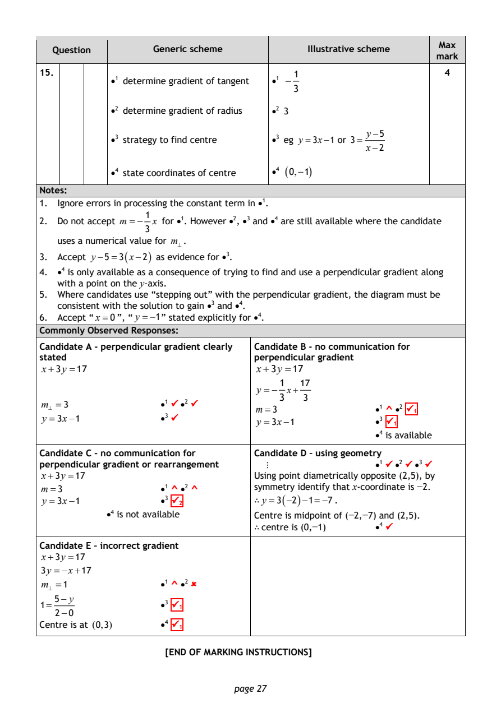
Selectable page text
Max
Question Generic scheme Illustrative scheme
mark
15. 1 4
•1 determine gradient of tangent •1 −
3
•2 determine gradient of radius •2 3
y−5
•3 strategy to find centre •3 eg y=3x−1 or 3=
x−2
•4 state coordinates of centre •4 ( 0,−1 )
Notes:
1. Ignore errors in processing the constant term in •¹.
1
2. Do not accept m=− x for •¹. However •², •3 and •⁴ are still available where the candidate
3
uses a numerical value for m_{⊥}.
3. Accept y−5=3 ( x−2 ) as evidence for •³.
4. •4 is only available as a consequence of trying to find and use a perpendicular gradient along
with a point on the y-axis.
5. Where candidates use “stepping out” with the perpendicular gradient, the diagram must be
consistent with the solution to gain •³ and •⁴.
6. Accept “x=0”, “y =−1” stated explicitly for •⁴.
Commonly Observed Responses:
Candidate A - perpendicular gradient clearly Candidate B - no communication for
stated perpendicular gradient
x+3y =17 x+3y =17
1 17
y =− x+
3 3
m_{⊥} =3 •1 •2
m=3 •1 ^ •2 1
y =3x−1 •3 y =3x−1 •3
1
•4 is available
Candidate C - no communication for Candidate D – using geometry
perpendicular gradient or rearrangement •1 •2 •3
x+3y =17 Using point diametrically opposite (2,5), by
m=3 •1
^
•2
^
s y m ⋮metry identify that x-coordinate is −2.
y =3x−1 •3 y =3 (−2 )−1=−7.
2
•4 is not available Centre is midpoint of (−2,−7) and (2,5).
∴
centre is (0,−1) •4
Candidate E – incorrect gradient ∴
x+3y =17
3y =−x+17
m_{⊥} =1 •1 ^ •2
5− y
1= •3
1
2−0
Centre is at (0,3) •4
1
[END OF MARKING INSTRUCTIONS]
page 27